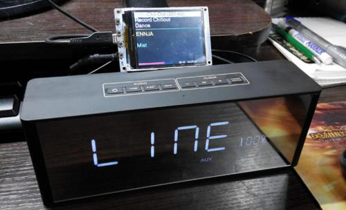

Onegin45 пишет:
Народ подскажите, кто юзает связку esp32+pcm5102, как оно? С vs1053 у меня все впорядке, хочу попробовать именно pcm5102. Основной вопрос aac это связка играет нормально? Грабли с изоляцией земли при подключении уся тоже присутсвуют?
И еще один вопрос - где-то видел страничку чела с вебрадио, он там в конце выложил ссылок на детали, среди них были и wi-fi антенны (внутренние и внешние), и еще кучка вебрадийных нужностей. Ссылку вовремя не сохранил, сейчас найти не могу может кто знает, что за чел?
Я юзаю. Притом, именно в том варианте, про который спрашивали, три-в-одном. Есть уже у китайцев такие, как будто специально заточенные под наше дело: "TTGO TM" зовётся. Вбивайте в поиск - куча найдётся. Давненько она у меня. Очень мне нравится. Она у меня всё ещё даже без корпуса таскается. Издеваюсь над ней, экспериментирую - ничего, жива пока.
Как пример, про неё всё расскажу.
Оснащение. На борту ESP32 (WROOM), I2S аудио pcm5102, цветной TFT дисплей 2,4 дюйма с разрешением 240x320 точек. Бесплатным дополнением идёт слот для TF-карточек (это на будущее), контроллер заряда и питание от Li-Ion аккумулятора и кнопки управления. Также на плате сразу присутствует мини джек 3,5 мм для подключения наушников или другой аккустики, движковый выключатель и даже шнурочек с разъёмом для подключения батарейки прилагается. Надо отметить, что плата имеет микро разъём для подключения внешней Wi-Fi антенны. Что на мой взгляд, совсем не обязательно, но раз уже есть, то пусть. Но у неё и собственная антенна форм-фактора 3D ловит просто замечательно. Сравниваю со всеми другими, у этой пока лучшая. Дециков на 5 бьёт керамическую.
Эту ТМ-ку я брал на Али, в магазине LilyGO Store. Сама приблуда здесь. У этого продавца брал много, доставка стандартная - месяц, к тому же, через 3 дня праздничные скидки. Пришла в пластиковой коробочке под размер - только дырочки проковырять и можно в неё вставлять.
Всё нормально, всё есть в наличии и сразу, всё работает. Требуется минимум усилий для реализации интернет-радио, как специально для него делали. Требуется только залить прошивку (тоже уже готовые есть, только кнопочки на переключение станций назначить), сунуть в коробочку и уже можно пользоваться. Из косяков, которые я пока не победил, это подсветка, которая не гасится вместе с дисплеем (для экономии батареек). Сейчас выясняю, подвешена ли она на какой-нибудь GPIO - тогда легко задействовать. Если же она прямо с питания взята - тогда трудно, надо клей сплавлять.

Ладно. По делу. Потоки в AAC она не играет. А что от неё ожидать, на борту ведь нет "железного кодека" типа vs1053. Возможен только софтовый, который совсем недавно введён разработчиком и только для WROVER-ов, а не для WROOM-ов. На WROOM-ах просто не хватает оперативки, ну негде софту переваривать эту шнягу с лицензиями. Вобщем, у простой 32-й ЕСП-шки мощей не хватает - ни железа, ни мозгов. Даже и для WROVER-ов в паре с PCM-ками AAC-потоки - это почти непосильная задача. С pcm-кой на них играют не все, а только некоторые AAC-станции. И то как-то неустойчиво, что-ли. Я это дело уже прошёл. Включаешь станцию, она "стопарит" и молчит, стартуешь, она опять не хочет. Через пару минут вернулся на эту станцию, она вдруг заиграет. А потом, ни с того не с сего опять "стопнет". В общем, не камильфо. Или это я такой придирчивый. Но ведь есть с чем сравнить, список станций один и тот же. А VS-ке со старенькой, "голенькой" ESP32 что не кинь - всё "сожрёт". Так что любой WROOM с VS-кой фору даст WROVER-у с PCM-кой. (Во! Жаргон пошёл.)
Так что бросьте все эти мечты о дешевых недозвуковухах. В нашем мире не может аппаратный декодер таких звуковых форматов, как OGG, AAC и подобных быть дешевым. Эти форматы все лицензионные и таки требуют денег за их пользование. Поэтому цена таких устройств большая, и стоит vs1053b около целых 500 деревянных рублей! А у pcm-ки цена искуственно завышена. Ей грош-цена, а продают за 350 рублей. Просто распиарили некогда популярное старьё и впаривают несведущим. Так что из бюджетного варианта пока только VS-ки рулят.
Я тоже начинал с PDM - фонит, звук поганый. Давай фильтры навёртывать всякие, LPF, сигма-дельта фильтры и их вариации, трансформаторы на выход, кольцевые дроссели на питание и всякую другую чепуху. Цифровой шум - это действительно большая проблема, но ей не уделяется должного внимания (или мне так показалось, новичку, да с налёту). Пока звуковухи ждал, пробовал USB-шную звуковушку прикрутить (это те, что за-доллар-пол-мешка). А что? Из роутеров именно с ними интернет-радио делают, ведь тот же ЦАП. Но у меня ничего не получилось, да и драйверы вне проекта. PCM-ку взял, с ней давай кувыркаться - ну да, куда ни шло, вроде бы терпимо. Помехи победил, но ведь и это не полноценный элемент. (Дальше в лес - больше дров.) Звук нормальный, а где же AAC? К тому времени я уже и VS-ку обкатал. Вот! Подумал, это то, что надо. Хоть я и не меломан и слух у меня уже совсем не тот, но, чёрт возьми, разница в цене 150 деревянных не стоит того, чтобы столько же упираться, как с pcm-кой, а на выходе иметь "обрезок". В конце концов, ведь буду же своё радио кому-то из знакомых показывать, хвастаться. А то и в домашний центр воткну да как дам жару! Ведь тема становится популярной. Я кому из друзей показывал, так прямо видно, как мечтательные искорки в глазах зажигаются - кому бы в сад такую, кому в гараж или мастерскую... Так что не рекомендую здесь экономить - не стоит оно того.
Кстати, эти 150 рублей при конструировании радио нам дают свою экономию чуть позже. Если хочется звук получше, то на VS-ке можно неким подобием эквалайзера его чуть-чуть подкрутить. Автор KaRadio постарался. Если коробушка или динамики вышли чуть неудачными или дешманскими, то это можно слегка подправить. И будет норма, как с дорогими и качественными. (Или же динамики менять будем и побежим за несколько тыров новые покупать? Шутка.)
И ещё такая деталь. Автору KaRadio уже не раз задавали вопрос и просили срастить его радио с Bluetooth и mp3-плеером, ведь всё для этого есть. И он не отказал на отрез. Уклончиво обещал, мол в будущем, сейчас памяти не хватает и спецификация не полностью раскрыта. И что же мы видим сейчас? WROVER-ы с памятью пошли, а на многих vs1053b уже даже карт-ридер в наличии. Так что вполне вероятно ждать в ближайшем будущем некой трансформации нашего радио в нечто универсальное. Ну, и теперь представьте, мечтающие о pcm-ке, только появится прошивка и все "vs-ники" мгновенно получат универсальный комбайн, а вы в свою pcm-ку даже флешку ни с ogg-ами, ни с wav-ами, ни другими лос-лесами не вставите.
А по нашему пациенту TTGO TM, то она играет 95% станций из моего списка. Сеть держит уверенно, связь не рвёт, грузится быстро. Считаю, что имеет свою нишу и право на жизнь. Особенно подойдёт для новичков, чтобы попрактиковаться и особо торопливых - купил, прошил и пользуешься. И никаких головных болей. Так что можно её брать.
Звук у неё приличный, особенно на наушники. А с усилителями придётся повоевать. Всё так же, пока массы не отвяжите бедет шуршать и потрескивать. Но здесь дело ещё хуже с точки зрения доступа вовнутрь - никак туда не попасть. Аппарат - цельное изделие, что есть, тем и придётся пользоваться. Ну а за счёт компактности вполне достойный аппарат. Комплектация богатая - всё есть и всё нужное для интернет-радио, ничего лишнего. Если всё это покупать раздельно, дешевле не выйдет Можно брать её с собой куда-нибудь на пикник, или на природу. Легко подключать в линейный вход любой колонки, а в Интернет через телефон - играет замечетельно.
Я планирую её использовать как мобильную. Цепляю второй точкой к мобильному 4G-роутеру (с пачку сигарет, только в 2 раза тоньше) тоже со встроенным аккумулятором.
Насчёт кучи разных ссылок с вэб-радийными прибамбасами это, скорее всего, на Ютубе. Обычно там такое практикуется.